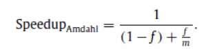

优化程序性能
目录
优化程序性能
优化程序性能大体上可以分为两个步骤：
第一步就是消除不必要的内容，让代码尽可能有效地执行它期望的工作。这包括消除不必要的函数调用、条件测试和存储器引用。这些优化不依赖于目标机器的任何具体属性。
第二步是利用处理器提供的 指令级并行 能力，同时执行多条指令。而想要充分利用指令级并行能力，我们必须了解处理器的运作，以及程序的汇编代码。研究程序的汇编代码表示，是理解编译器，以及产生的代码如果在处理器上运行的最有效的手段之一。
妨碍优化的因素
我们将两个指针可能指向同一个存储器位置的情况称为 存储器别名使用 。在只执行安全的优化中，编译器必须假设不同的指针可能会指向存储器中同一个位置。这就造成了一个主要的 妨碍优化的因素 ，这也是可能严重限制编译器产生优化代码机会的一个方面。如果编译器不能确定两个指针是否指向同一个位置就必须假设什么情况都有可能，限制了可能的优化策略。例如：
void fun1(int *xp, int *yp) { *xp += *yp; *xp += *yp; } void fun2(int *xp, int *yp) { *xp += 2 * *yp; }
如果 xp 与 yp 不同，则编译器可以将 fun1 优化为 fun2 的形式，这样只需要三次存储器引用（读*xp，读*yp，写*xp），而 fun1 需要六次。但是如果 xp 与 yp 相同，则这两个函数会产生不相同的结果，fun1 会将*xp 的值增加 4 倍，而 fun2 会将*xp 的值增加 3 倍，所以编译器必须假设所有情况，因此不同进行这样的优化。
第二个妨碍优化的因素是函数调用。大多数编译器不会试图判断一个函数是否没有副作用，因此任意函数都可能是优化的候选者。相反，编译器会假设最糟的情况，并保持所有函数调用不变。假设我们有如下函数：
int counter; int f() { return counter++; } int fun1() { return f() + f() + f() + f(); } int fun2() { return 4 * f(); }
因为函数 f()有一个副作用——修改了全局变量 counter 的值，所以编译器不能将 fun1()优化为 fun2()，这两个函数会返回不同的值，fun1 返回 6 而 fun2 返回 0。因此一个函数可能会产生各种可能的副作用，所以编译器会假设最糟糕的情况并保持所有函数调用不变。
优化程序性能的方法
消除循环的低效率
找出要执行多次但是计算结果不会改变的计算，将该计算移动到代码前面不会被多次求值的部分。这种方法称为 代码移动 。优化编译器会试着进行代码移动，但不幸的是，就像前面讨论的那样，对于会改变在哪里调用函数或调用多少次的变换，编译器通常非常小心，假设函数都会有副作用。所以程序员必须帮助编译器显示地完成代码移动。（一个看上去无足轻重的代码片断有隐藏的渐进低效率。）
减少过程调用
过程调用会带来相当大的开销（参数传递、保护现场、控制转移等），而且妨碍大多数形式的程序优化。虽然减少过程调用会损害程序的模块性，但对于性能至关重要的应用来说，为了速度，经常必须要损害一些模块性和抽象性。为了防止以后要修改代码，添加一些文档是很明智的，说明采用了哪些变换以及导致进行这些变换的假设。
消除不必要的存储器引用
消除无用的存储器读写，引入一个临时变量，用来累积计算出来的值，只有在完成计算之后存放到存储器中。
循环展开
循环展开能够从两个方面改善程序的性能。首先，它减少了不直接有助于程序结果的操作的数量，例如循环检索引用计算和条件分支。其次，它提供了一些方法，可以进一步变化代码，减少整个计算中关键路径上的操作数量。
提高并行性
多个累积变量。
对于一个可结合和可交换的合并运算，比如整数加法或乘法，可以通过一组合并运算分割成两个或更多的部分，引入多个累积变量，并在最后合并结果来提高性能。充分利用处理器的吞吐能力。
重新结合变换。
通过在计算中添加、删除括号来改变元素的合并方式。重新结合变换能够减少计算中关键路径上操作的数量，通过更好地利用功能单元的流水线能力得到更好的性能。例如：
//OP可能为+,-,*,/中任意一个操作 acc = (acc OP data[i]) OP data[i+1]; //重新结合变换为 acc = acc OP (data[i] OP data[i+1]);
其他限制因素
寄存器溢出
循环并行性的好处受到描述计算的汇编代码的能力限制。特别地，IA32 指令集只有很少量的寄存器来存放累积的值。如果我们的并行度 p 超过了可能的寄存器数量，那么编译器会诉诸*溢出*，将某些临时值存放到栈中。一旦出现这种情况，性能会急剧下降。不过 x86-64 代码能够同时累积最多 12 个值，而不会溢出任何寄存器。
分支预测或预测错误处罚
当分支预测逻辑不能正确预测一个分支是否要跳转的时候，条件分支可能会导致严重的 预测错误处罚 。虽然错误的分支预测的影响可能非常大，但是这并不意味着所有的程序分支都会减缓程序的执行。实际上，现在处理器中的分支预测逻辑非常善于辨别不同的分支指令有规律的模式和长期的趋势。例如，在闭合循环的分支中通常会被预测为选择继续循环的分支，因此只在最后一次会导致预测错误处罚。另外，还可以显示的编写功能式的条件表达式，以产生条件传送，减小预测错误处罚。不过并不是所有的条件行为都能用条件数据传送来实现。
存储器性能
如果程序中存在写/读相关——一个存储器读的结果依赖于最近的存储器写，会导致处理速度下降，关键路径变长，程序的并行性下降。
Amdahl 定律

f 为执行某个任务的总时间可被改进部分的执行时间所占百分比，m为可被改进部分采用改进措施后比没有改进前性能提高倍数。
该公式表示 Amdahl 定律的主要观点——要想大幅度提高整个系统的速度，我们必须提高整个系统很大一部分的速度。
总结
优化程序性能可以分为三种基础策略：
- 高级设计。 使用适当的算法和数据结构。避免使用渐进产生糟糕性能的算法或编码技术。算法方面的内容，可以参考我的《算法导论》笔记。
- 基本编码原则。 避免限制优化的因素，使编译器产生高效的代码。
- 消除连续的函数调用。在可能时，将计算移到循环外。考虑有选择地妥协程序的模块性以获得更大的效率。
- 消除不必要的存储器引用。引入临时变量来保存中间结果。只有在最后的值计算出来时，才将结果存放到数组或全局变量中。
- 低级优化。
- 展开循环，降低开销。
- 通过使用例如多个累积变量和重新结合等技术，找到方法提高指令级并行。
- 用功能的风格重写条件操作，使得编译采用条件数据传送。 (功能的风格即为”a ? b : c;”)
最后，要警惕，在为了提高效率重写程序时避免引入错误。在引入新变量、改变循环边界和使得代码整体上更加复杂时，很容易犯错误。一项有用的技术是在优化函数时，用检查代码来测试函数的每个版本，以确保在这个过程没有引入错误。检查代码对函数的新版本实施一系列的测试，确保它们产生与原来一样的结果。
“过早的优化是万恶之源”-–—C.A.R.Hoare
正如 Amdahl 定律所表明的那样，除非你知道瓶颈在哪，否则不要匆忙进行优化。比起跑，先学会走更加重要。